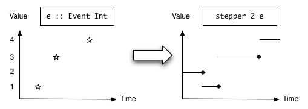

So far, most of our programs were concerned with simple input to output transformations (e.g. parsing). Naturally, functional programming languages excell at such tasks, as functions are all about transforming input to output.
When we did implement something interactive (the Sokoban game), we resorted taking a very imperative concept, namely a state machine, and implemented it functionally.
Today we will learn about a programming model for tackling inherently interactive tasks, such as user interfaces, robot controlers, computer music and others: Functional reactive programming (FRP). This is a paradigm that allows you to declaratively specify the behavior of a complex interactive system. The principle is independent of the programming language, and you will be able to take some of the concepts and ideas here, and apply them elsewhere.
Classical UI primitives
But before we venture to functional reactive programming, let us have a look at how user interfaces are classically programmed. Here is the code for a typical GUI application, in this case a simple model of a banana dispensing machine:
module Main where
import Graphics.UI.WX
main :: IO ()
main = start coinUI
coinUI :: IO ()
coinUI = do
f <- frame [text := "WX Demo"]
money <- textEntry f [text := "5"]
add <- button f [text := "Insert coin"]
buy <- button f [text := "Buy banana", enabled := False]
quit <- button f [text := "Quit", on command := close f]
set f [layout :=
margin 5 $ column 5 $ map hfill
[ widget add
, widget buy
, widget money
, widget quit
]]
set add [ on command := do
v <- read <$> get money text
let v' = v + 1 :: Integer
set money [ text := show v' ]
when (v' >= 10) $ do
set buy [ enabled := True ]
]
set buy [ on command := do
v <- read <$> get money text
let v' = v - 10 :: Integer
set money [ text := show v' ]
infoDialog f "Yummy" "You bought a banana."
]This is using the Haskell bindings to the wx toolkit, but the concepts are similar in other UI interfaces, such as GTK, QT or, to some extent, HTML.
The basic scheme is:
- You create a bunch of widgets (buttons, text entry fields).
- You arrange them on screen in a layout.
- You set up call backs: Pieces of code to run when certain events happen.
- In these callbacks, you read and write status from the widgets, fire up dialoges etc.
- A central event loop, provided by the UI toolkit, is started (here
start) which will now run forever, waiting for user input and other events, and then running the appropriate callback.
This works, but this is obvioulsy error prone, because we are not declaring our intent, but rather have to implement it. For example, the intention is: „A banana can only be bought when there are at least 10 coins inserted.“ Already we applied this logic at two spots in the program: In the initialization code we disable the buy button because we initialize the counter with 5. And when we add coins, we check if we can enable the button. But we forgot that chek in the callback of the buy button.
And this repeats itself: For every event we have to think of all the possible effecs on the state of the program this can have. Now assume the price of the banana would vary with every banana bought, or could be set separately, or might even depend on some varying factor such as the time of day – this would really complicate things!
Reactive-bananas
One solution to this problem is functional reactive programming, where the interaction between the components is declared once, and the system takes care of doing the right thing.
There are several implementations of FRP around, some more experimental, some more educational and some more practical. I will use reactive-banana, because it has good documentation and explains the concepts quite clearly. I will later comment on an interesting alternative.
Behaviors
The key to reactive programming is to zoom out. Instead of looking at a single piece of a complex system at a given time, and deciding what to next, the idea is too zoom out and look at the behavior over time. Wholemeal programming again!
So one type of interest is that of a Behavior. The real implementation is different, but we can think of it as having the following type:
type Behavior a = Time -> aThis describes a value over time that is always available. The position of the mouse is a good example of this, or the current time, or some measurement, or the status of a network connection.

This and the following pictures were taken from the reactive-banana package and were created by Heinrich Apfelmus.
We have seen this when working with animations in CodeWorld. The new things now is that we are going to be combinating multiple behaviors. What combinator do we want? We want to
- be able to apply a pure function to a behavior,
- create a constant behavior and
- apply a pure function to more than one behavior.
Clearly, we want to have instances Functor Behavior and Applicative Behavior.
What behaviors exist in our example? The current value of the coin cointer might be modelled as
counter :: Behavior Integerand the current price of the banana might be
price :: Behavior Integerand then we could derive a behavior that, for any moment in time, indicates whether we can buy a banana:
canBuy :: Behavior Bool
canBuy = (>=) <$> counter <*> priceBut this only gets us so far, and on their own, behaviors are not very useful. They are more fun in the interplay with events.
Events
Events occur at certain tims, and may carry a value with them. At a specific time, there can be at most one event. Typical examples are mouse clicks, keyboard presses, status changes of the network connection.

The model type for one event source, is the following:
type Event a = [(Time,a)]with the constraints the the Times are strictly monotonically increasing.
So clearly, a possible event is one that never fires:
never :: Event
never = []No other events are provided by the FRP framework itself. Any such events, e.g. keyboad presses, are provided from the outside, often via callback functions of the UI library used.
It is not hard to define our own events, but there exists glue code that integrates into various UI frameworks. We will see that in a moment, but for now just assume that you can have events like Event () for button clicks, or Event String for key presses.
Events on their own can be combined in various ways:
There is a
Functor Eventinstance so we havefmap :: (a -> b) -> Event a -> Event bTwo events can be combined using
unionWith :: (a -> a -> a) -> Event a -> Event a -> Event awhich just merges the events from two sources. They need to have the same type for that. The first argument indicates what to do if both events fire at the same time: Then this function is used to combine them.
A common case is to combine many events that contain functions, so here we have
unions :: [Event (a -> a)] -> Event (a -> a)An event stream can be filtered:
filterE :: (a -> Bool) -> Event a -> Event aThe value of an event can be accumulated:
accumE :: MonadMoment m => a -> Event (a -> a) -> m (Event a)Ignore the
MonadMomentconstraint at this point. This function takes an initial value, and an event that produces functions to modify this value, and returns an event that is the accumulation of all the functions that were sent over this event so far.For example, let
groupSizeEntered :: Event Integerbe an event that fires whenever a group enters, and indicates the group event size. ThentotalPatrons :: Event Integer totalPatrons = accumE 0 ((+) <$> groupSizeEntered)fires whenever a group enters, but now indicates the total number of people who have entered so far.
Combining Events and Behaviors
Then there are ways to create events that also involves reading from an behavior:
An extension of
fmapallows the function to be varying over time:apply :: Behavior (a -> b) -> Event a -> Event bThis function is also available as
<@>. Obviously, at the time an event arrives the current value of the behavior is used to modify the value of the event.A derived notion is
(<@) :: Behavior b -> Event a -> Event bwhich fires whenver the given event fires, but takes the value from the behavior.
Note the similarity to the type signatures of
<*>and<*; these combinators can be used similarly. Events do not support<*>, i.e. they do not have an applicative instance. They cannot, because two given events do usually not provide a value at the same time.Similarly,
filterEis generalized tofilterApply :: Behavior (a -> Bool) -> Event a -> Event aOf this, a special case is
whenE :: Behavior Bool -> Event a -> Event a
And then there is a way of treating an event as a behavior:
stepper :: MonadMoment m => a -> Event a -> m (Behavior a)Again ignore the constraint for now. This takes a starting value and an event of the same type, and as a behavior, always takes the last seen value of the event:

At just the time of an event, the stepper still has the previous value. This is important in order to have cyclic dependencies between events and behaviors without crashing the program.
Often one would combine stepper with accumE, so this is conveniently available as
accumB :: MonadMoment m => a -> Event (a -> a) -> m (Behavior a)The Moment Monad and running an event network
In the type signatures above, we ignored a MonadMoment m constraing a few times. This monad is where we wire up all the pieces and combine the events and behaviours the way we want them to. The MonadMoment type class has two instances: Moment and MomentIO. The second allows events to have an external effect, so in a UI application we, likely need that one.
So here is a partial attempt of implementing the coin machine:
coinMachine :: MonadIO ()
coinMachine = do
let eCoin = never
eBuyPress = never
bPrice = pure 10
bCanBuy = (>=) <$> bMoney <*> bPrice
eBananaSold = whenE bCanBuy eBuyPress
bMoney <- accumB 5 $ unions
[ (+1) <$ eCoin
, subtract <$> bPrice <@ eBananaSold
]
return ()We leave out the definition of the external eventts (eCoin and eBuyPress) for later.
Recursive Do
This code does not work as such, because bMoney is out of scope in the definition of eCanBuy. Reordering the definitions would not help, because these genuinely are recursive. Usually, when using monads and do-notation, one does not want to have such recursive definitions, but in our case, this is precisely what we need to describe the network.
So we need to reach out for a language extension that allows us to to have recursive definintions in do-notation. We add {-# LANGAUGE RecursiveDo #-} to the top of the file and change do to mdo (from μ-do, where μ is used in math to denote fixed points).
There is much that can be said about the theory and RecursiveDo and its applications. For now we just accept that it allows us to refer to things later in a MonadIO computation.
Compliling and activating a network
So what can we do with this network description? First we have to compile it to an event network using
compile :: MomentIO () -> IO EventNetworkand then, once we have such an EventNetwork, we can start it using
actuate :: EventNetwork -> IO ()The latter will actually start listening to events. But we have not hooked up our events, so lets do that.
We move the definition of our coinMachine into the coinUI function, so that the widgets that we created are in scope. Then we can use the event0 function from Reactive.Banana.WX to create a banana Event from an UI event.
let coinMachine :: MomentIO ()
coinMachine = mdo
eCoin <- event0 add command
eBuyPress <- event0 buy command
let bPrice = pure 10
bCanBuy = (>=) <$> bMoney <*> bPrice
eBananaSold = whenE bCanBuy eBuyPress
bMoney <- accumB 5 $ unions
[ (+1) <$ eCoin
, subtract <$> bPrice <@ eBananaSold
]
return ()
eventNetwork <- compile coinMachine
actuate eventNetworkThis works, but so far, we do not do anything with our events or our behavior changes. Lets change that. We remove our pedestrian event handlers, and also enable the buy button right from the start.
Reacting on Events
In order to react on event, we run the
reactimate :: Event (IO ()) -> MomentIO ()function. In our case, whenever a banana is sold, we want to show a dialog. So this code will do:
let showDialog :: IO ()
showDialog = infoDialog f "Yummy" "You bought a banana."
reactimate (showDialog <$ eBananaSold)Reacting to Behavior
Yay, we get bananas! But the UI does not reflect the state of affairs. Luckily, we can tell the system to ensure that a UI property should always reflect the state of a behavior, using
data Prop' w = forall a. (Attr w a) :== (Behavior a)
sink :: w -> [Prop' w] -> MomentIO ()So we can use this to enable/disable the buy button, and also show the current balance:
sink buy [ enabled :== bCanBuy ]
sink money [ text :== show <$> bMoney ]Other FRP libraries
The reactive-banana library is a very nicely designed implementation of FRP, well documented. If it suits your needs, you can and should use it. It comes with bindings to WX, which allows you to create native applications on Linux, Windows and OS X. There are also bindings to SDL, and it is easy to integrate it into your own event handler loop, e.g. for a command line arguments. Also see the list of examples, which includes games.
From the same author there is also threepenny-gui which uses the web browser as a display. “A program written with Threepenny is essentially a small web server that displays the user interface as a web page to any browser that connects to it.”. It has its own implementation of FRP, similar to that of reactive-banana.
Among the many other FRP implementations out there I’d like to highlight reflex together with reflex-dom. This is developed by a company that makes good money by rapidly creating complex browser-based applications, and is based on a very performant FRP applications. It is all written in Haskell, but compiled to JavaScript and runs in the browser. If you want to write highly interactive, slick and complex web applications, this might be the tool of your choice. Unfortunately, documentation is still scarce.